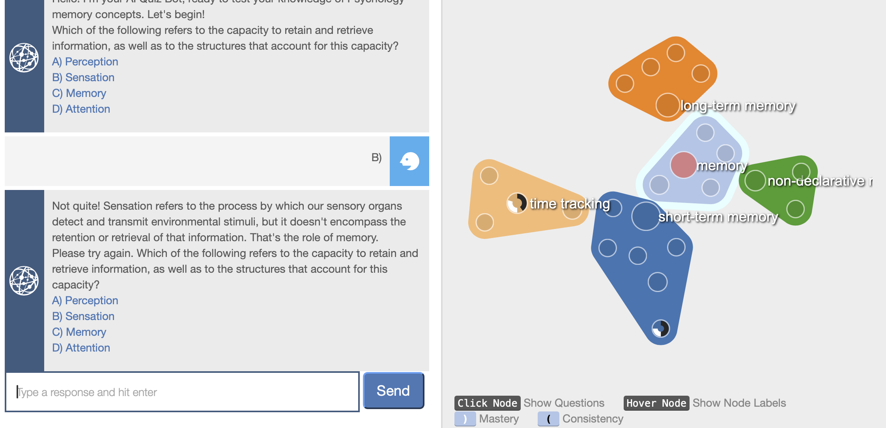
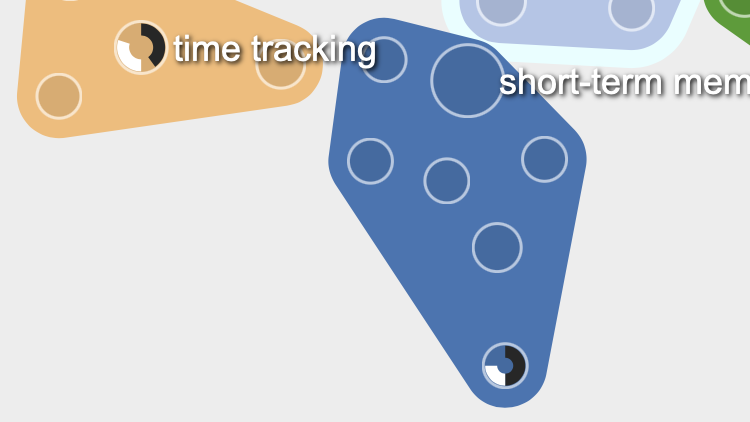
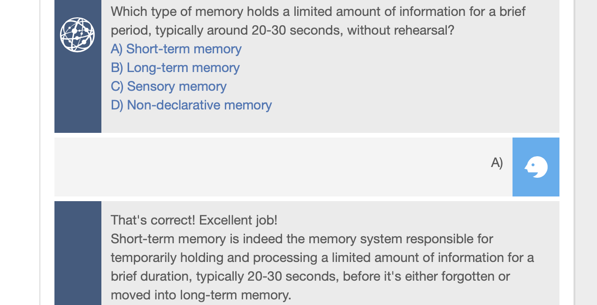

Visual
Dialog
A concept map that responds to conversation. An LLM conducts a Socratic dialogue with the student — and as each concept enters the discussion, the map lights up, connects, and tracks progress in real time.
The map listens to the lesson
Visual Dialog fuses conversation and knowledge structure: the concept map is the live state of the dialogue. When the bot corrects a mistake, the right node lights up as a hint. The student always knows where they are in the knowledge space. The backend supports both local and cloud LLMs.
Memory as a force-directed network
The curriculum is a graph — nodes for concepts, edges for relationships. Connected ideas cluster naturally, and the structure itself becomes part of the lesson. Students can see which concepts are central, which are peripheral, and how a misunderstood idea connects to ones they already know.
When the LLM references a concept, that node blinks red. Wrong answer? The correct concept lights up before the student re-reads the explanation — a hint grounded in the domain's own structure.

Mastery visible at a glance
Overall progress renders as a ring overlay on the concept map, with per-cluster breakdowns below. Updated after each question — the student always knows how far they've come without leaving the visualization.

Self-directed, conversational, multi-domain
Any subject with a graph-representable structure — psychology, biology, history, mathematics — can be loaded as a curriculum. The LLM adapts difficulty to the student's answers. Choices arrive as clickable buttons, not a text box — keeping the interaction fluid.
